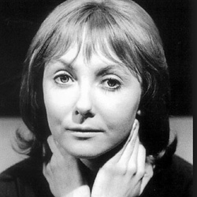

| Home | The Doctors | The Companions | The Villians |
|
Vicki Vicki is a fictional character played by Maureen O'Brien in the long-running British science fiction television series Doctor Who. An orphan from the 25th century, she was a companion of the First Doctor and a regular in the programme in Seasons 2 and 3 in 1965. Her last name was never revealed during the series, but was in the novel Byzantium! Vicki appeared in 9 stories (38 episodes). |